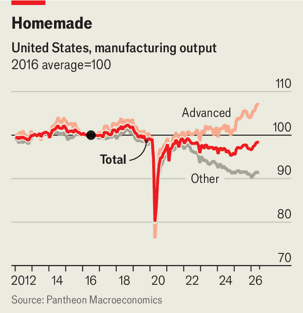
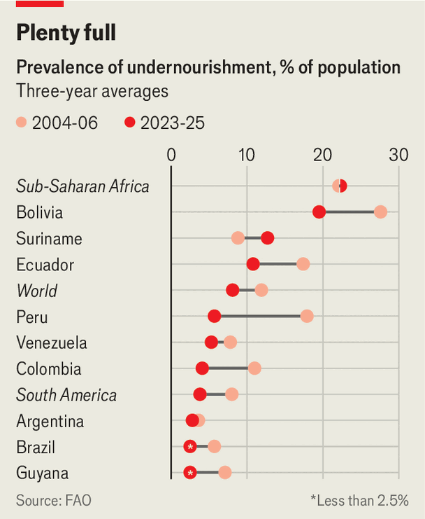

足球世界杯在西班牙队以1-0战胜阿根廷队的激烈决赛中落幕。英格兰与法国争夺第三名的比赛中，英格兰以6-4取胜，这是英格兰自1966年夺冠以来的最佳战绩。尽管赛事相比以往赛事商业化程度空前，但整体仍被视为成功。赛事中“补水休息时间”被批评为明显为电视广告量身定制。男子一英里跑世界纪录被刷新，英国选手乔什·科尔（Josh Kerr）以3分42.66秒完成，比1999年由摩洛哥选手希查姆·埃尔·古尔鲁吉（Hicham El Guerrouj）保持的旧纪录快了半秒。男子一英里跑纪录间隔27年，是自1954年罗杰·班纳斯特（Roger Bannister）跑出4分钟以内以来最长的纪录间隔。■
这可能是对一个对特朗普处理与伊朗战争不满的国家的安抚手段。这正是特朗普一贯的作风：用一个有缺陷的协议来弥补一场拙劣的战争。风险何在？沙特阿拉伯作为稳定的君主制国家已持续一个世纪，作为美国盟友也近一个世纪。但政府可能改变，沙特历史上曾出现极端主义倾向；没人能确定未来谁会掌控沙特的核计划。穆罕默德·本·萨勒曼（Muhammad bin Salman）亲王表示，如果伊朗发展出核武器，沙特也将自行建造核设施。近期事件恐怕不会让这位亲王对好战邻国更放心。这一切使地区局势更加复杂。伊朗在与美国的核谈判中立场可能更加强硬：为何要同意特朗普坚持的放弃铀浓缩计划，如果沙特已准备自行发展核武器？■
但更可能的是，奥尔特加（Ortega）正朝向建立一个正式的一党制国家迈进。选举早已沦为形式，2021年最近一次选举中，奥尔特加甚至将七名反对派候选人关押入狱。美洲国家组织（Organisation of American States）称该次选举“不自由、不公平或不透明”。他公开建立家族统治，将妻子罗萨里奥·穆里略（Rosario Murillo）任命为新设立的副总统职位，准备在他无法继续执政时接任。他或许希望其中一个五子接班。新的话语仍具影响力：流亡人士克劳迪娅·瓦尔加斯（Claudia Vargas）称这是“质的飞跃”，她的丈夫去年在哥斯达黎加家中被谋杀。若公然摧毁民主制度会带来什么后果？美国可能会施加制裁。■
原题：A gold-bar scandal pits Indonesia’s army against its police · 板块：Asia · 栏目：亚洲
黄金覆盖的火焰位于雅加达市中心国家纪念碑顶端，据说重达50公斤。因此，当印尼人得知前特别犯罪检察总长法比安·阿迪兰萨（Febrie Adriansyah）在豪华住宅中发现装有黄金条的七只行李箱时，震惊的并非黄金的存在，而是其重量高达74公斤。作为印尼最高反腐检察官的法比安承认，这处位于高端高尔夫球场旁的 gated community 中的住宅是他的。
杜特尔特仍是2028年总统大选的热门人选，清除杜特尔特家族积极拉拢的警察力量，无异于送他们一份厚礼。5月，杜特尔特首任警察局长罗纳德“巴托”·德尔罗萨（Ronald "Bato" dela Rosa）现身参议院投下关键一票，随后建筑内枪声大作，他趁乱逃离现场，至今仍下落不明。放弃禁毒战争也难以赢得选票，严苛的禁毒政策仍广受欢迎。禁毒行动鼎盛时期，近九成菲律宾人支持该政策。如今，菲律宾社会对杜特尔特是否应被追责已出现分裂。杜特尔特支持者在网上攻击马科斯为吸毒者，并指责其不够狠。就连数万受害家庭中的一些人也感受到了支持者的怒火。卡洛卡南（Caloocan）的谢丽亚是一位受害者，她居住在马尼拉以北。■
最关键的是，高桥克利强硬的领导风格成功地将一群意见分歧且意识形态多元的反对派团结起来，共同对抗她。"反对派达成共识，尽管在政策上存在分歧，但我们都认为自民党已越界。"亚洲集团（The Asia Group）的中村仁太郎表示。在参议院，执政联盟仅差几个席位即可获得多数，剩余政党联合起来于6月下旬阻止了国会审议进程。理论上，自民党可通过众议院的超级多数否决参议院的决定。但实际操作中，此举将带来显著的政治代价。因此，高桥克利推动法案的效率低于过去三位首相；甚至她的前任石破茂，曾同时领导参众两院的少数政府，其立法通过速度也更快。■
尽管有报道称资金紧张，民主党人仍不愿采取行动。许多人指责政府未能妥善核算战争成本。国防部称战争开支为375亿美元，主要涵盖弹药和燃料费用。若将美军基地维修费用及对消费者造成的损害计入，密歇根州参议员埃莉莎·斯洛金（Elissa Slotkin）估计总成本超过五倍。她还指出特朗普的子女正从国防部合同中获利。《经济学人》中期选举模型显示，民主党有81%的概率赢得众议院，45%的概率翻转参议院。卡内基基金会（Carnegie Endowment）的Aaron David Miller表示，特朗普与伊朗的矛盾令他想起林登·约翰逊（Lyndon Johnson）对越南战争的描述：“我感觉自己像在德克萨斯州高速公路上被冰雹困住的搭便车者，无法逃跑，无法躲藏，也无法让这场风暴停止。” ■
保持对美国政治的掌握，订阅我们的每日简报《The US in brief》，提供对最重要政治新闻的快速分析，以及每周简报《Checks and Balance》，深入探讨美国民主的现状及影响选民的关键议题。■
§023美国右翼如何转向厌恶共情
原题：How the American right came to hate empathy · 板块：United States · 栏目：美国
美国右翼对左翼所鄙视的诸多特质中，共情是最令人费解的。他们对共情的厌恶可谓深入骨髓。近年来，一系列书籍的出版进一步强化了播客和社交媒体上对共情的激烈批判，这种批判被视作一种罪恶。2025年，《领导力与共情之罪》（Leadership and the Sin of Empathy）由乔·里格尼（Joe Rigney）出版，紧随前一年畅销书《有毒的共情》（Toxic Empathy）之后。今年五月，市场营销学教授兼播客主理人加德·萨德（Gad Saad）推出的《自杀式共情》（Suicidal Empathy）迅速成为畅销书，持续占据榜单。■
问题在于，如今人们大多不再生活在狩猎采集社会中。当美国人和伊朗人连发动战争都难以有效理解对方时，更广泛的共情概念就显得尤为重要：不是“感同身受”的情感共情，而是认知共情，即心理学家所说的“心智理论”——推断他人如何看待世界的能力建立在认知基础上。这同样是进化心理学学生罗伯特·赖特（Robert Wright，曾为Lexington专栏撰稿人）新书《神的考验》（The God Test）的核心主题。在审视人工智能迅猛发展的背景下，赖特警告称，那些作为朋友和顾问的谄媚型AI代理可能带来深刻的部落化倾向。■
恰逢其时，这一行动正与特朗普与巴西总统卢拉（Luiz Inácio Lula da Silva）的更大矛盾不谋而合。五天后，特朗普援引1930年《斯穆特-霍利关税法案》中一项休眠条款，对部分加拿大商品加征50%关税，表面上是为了惩罚邻国美国对其汽车、酒精和乳制品的歧视性待遇。这些关税将涵盖近200亿美元的进口商品，包括通常在《美墨加协定》（USMCA）框架下免税的商品，而该协定正是特朗普在任期内谈判达成的。不过，新关税将在8月19日才生效——这一延迟将增强总统在美墨加协定续约谈判陷入僵局时的谈判筹码。这些战术性交锋背后，隐藏着一项更宏大的计划：重振特朗普去年“解放日”宣布的关税政策。■
法院“往往更关注美国贸易代表办公室（USTR）是否遵循了规定的程序”，美国律师事务所金斯伯格·斯帕林格（King & Spalding）的律师瑞安·马杰鲁斯（Ryan Majerus）表示，“而非巴西是否真的存在森林砍伐问题”。若关税政策重启，其效果是否显著？目前关税已开始为政府创收，并让特朗普得以同时施压盟友与对手。但最具政治影响力的长期目标仍是特朗普十年来承诺推动制造业复兴。供应管理协会（Institute for Supply Management）对采购经理的调查表明，工厂活动已连续六个月扩张。第二季度制造业产出年化增长率为4.6%，为2021年以来最快增速。美国财政部长斯科特·贝森特（Scott Bessent）宣称美国正经历“制造业复兴”。然而目前尚无充分证据表明关税正在推动工业复兴。

近来几乎所有增长都来自先进制造业，主要源于与人工智能相关的市场需求。该行业其余部分则陷入停滞，工厂建设支出已从2024年年化峰值近2500亿美元降至5月的1750亿美元，降幅近三分之一。新产能的大部分源于特朗普连任前的投资。自特朗普重返白宫以来，制造业就业人数已减少约7.5万人。不确定性正在抑制投资：毕马威会计师事务所（KPMG）对半数企业领袖的调查显示，他们对实施投资计划的信心低迷。哈佛商学院定价实验室（Harvard Business School Pricing Lab）指出，关税已使消费者价格上升约0.8%，可能进一步推高。■
纽约联邦储备银行的研究显示，近半数缴纳关税的企业仍预计会将更多成本转嫁给客户。特朗普的关税可能在法庭上得以维持。他们能否在价格敏感的选民中维持支持则更难确定。■ 关注美国政治，请订阅我们的每日简报《美国简报》，提供对最重要政治新闻的快速分析，以及每周专栏《Checks and Balance》，深入探讨美国民主现状及选民关心的议题。
§025密歇根重启铜矿的努力举步维艰
原题：The faltering effort to revive copper mining in Michigan · 板块：United States · 栏目：美国
但他承认，最早到2028年才开始建设，而生产则要等到2030年。铜价波动剧烈，这为铜价再次下跌提供了充足的时间。投资者可能会失去耐心。与奥希亚先生的乐观态度形成鲜明对比的是，公司最新年度报告警告称，对“公司作为持续经营实体的能力存在重大疑虑”。特朗普政府的出口-进口银行（Export-Import Bank）或许能成为科珀伍德（Copperwood）的救星，由纳税人买单。若无此援助，这个偏远半岛所设想的转变很可能只会停留在想象中。■ 关注美国政治动态，请订阅我们的每日简报《美国简报》（The US in brief），获取最新政治新闻的快速分析，以及每周专栏《制衡》（Checks and Balance），探讨美国民主现状及选民关切议题。
§026南美根除饥饿
原题：South America is eradicating hunger · 板块：Americas · 栏目：美洲
巴西的家庭补助计划（Bolsa Família）已实现数字化支付并将其与社会登记系统挂钩，有效减少了欺诈行为并提升了灵活性（例如，现在可覆盖收入波动的季节性工人）。哥伦比亚正考虑取消对最贫困群体现金补助的附加条件，因为这些孩子的家庭可能连学校都无法负担。智利的类似计划则包含职业培训内容。现金补助计划广受欢迎，右翼政客们纷纷支持。在任期内，巴西前总统雅伊尔·博尔索纳罗（Jair Bolsonaro）将家庭补助计划的平均津贴三倍于原有水平。米莱（Mr Milei）在受到天主教会批评后，将食品券资金翻倍。哥伦比亚右翼民粹主义总统候选人阿贝尔多·德拉·埃斯皮里埃拉（Abelardo de la Espriella）承诺缩减国家规模40%，却乐观地表示不会削减社会福利支出。■

智利极右翼总统何塞·安东尼奥·卡斯特（José Antonio Kast）为削减福利不得不祭出毒品犯罪的幽灵，提议建立“破坏者登记册”，阻止有犯罪记录者领取福利。严峻挑战依然存在。最大的威胁是气候变化。气温上升使植物害虫和农作物减产变得更为频繁。明年形势尤其严峻。美国国家海洋和大气管理局（National Oceanic and Atmospheric Administration）表示，即将来临的厄尔尼诺现象周期将“非常强烈”，这是该现象五个等级中的最高级别，自1950年以来仅第三次出现。前秘鲁政府部长卡罗琳娜·特里韦利（Carolina Trivelli）表示：“这将加剧所有粮食问题。”这使得现在完善福利体系变得尤为困难。然而改革势在必行。■
按购买力调整后，南美洲是全球获取健康饮食成本第四高的地区，仅次于加勒比、北非和东南亚。水果蔬菜在以盛产这类农产品著称的地区却出奇地昂贵。这是因为农田大多用于大宗商品种植。当绿叶蔬菜生产时，糟糕的道路和不稳定的冷链推高了成本。经济拮据的消费者更倾向于选择加工食品，这类产品高热量但易获取。这些问题是可控的。新技术正在帮助农民适应气候变化。玻利维亚、巴西和秘鲁的政策制定者已悄然承认某些项目需要更精准的投放。巴西智库Comida do Amanhã的朱莉安娜·唐加里表示，健康食品标签的改进正在推进，同时“sin tax”（恶税）也在逐步实施。没有完美的食品体系。■
然而，南美洲彻底的饥饿或许即将终结。■
§027巴西受欢迎的支付体系惹恼特朗普
原题：Brazil’s much-loved payments system has drawn Donald Trump’s ire · 板块：Americas · 栏目：美洲
所有在巴西拥有超过50万账户持有人的巴西或外国银行均须向客户提供Pix服务。但支付处理器如Visa和Mastercard并无强制要求加入，它们是自愿参与的。特朗普政府也抱怨巴西央行既运营又监管Pix。这种安排确实引发了关于将支付系统及其生成的金融数据的控制权集中于单一机构的合理质疑。但这些担忧属于权力过度集中问题，而非针对外国企业的歧视。政府通常会建设、拥有并监管关键基础设施。彼得森国际经济研究所（Peterson Institute for International Economics）的莫妮卡·德·博尔（Monica de Bolle）指出，将相同模式应用于支付系统并无内在歧视性。
2025年4月，该国放宽了银行保密法，这是国际货币基金组织（IMF）长期以来的要求。三个月后，又通过了另一项法案，允许国家重组或清算资不抵债的银行。但尚未通过最具决定性（且争议最大的）立法——所谓“缺口法”，该法案将把约800亿美元的损失在银行、存款人和国家之间分配。根据内阁于12月批准的草案提案，小额存款人可在四年内收回最多10万美元。萨拉姆（Salam）表示，这将覆盖85%的账户持有人。其余存款人将获得资产支持证券，可能需长达20年才能兑付。然而该计划不可行，因为向存款人支付的费用四年内至少需220亿美元，远超国家或黎巴嫩国家银行（Banque du Liban）的承受能力。■
当弗多罗夫试图整合薄弱且指挥不力的单位时，谢尔斯基将军组建了新旅，稀释了本就稀缺的兵力。皇家联合服务研究所（Royal United Services Institute）智库的杰克·沃廷格（Jack Watling）写道：“谢尔斯基将军将乌克兰数支精锐部队分散部署在战线两端，形成分散作战态势。”在与谢尔斯基将军激烈争执并未能将其罢免后，弗多罗夫于7月15日被泽连斯基解职。此举引发了要求谢尔斯基下台并呼吁弗多罗夫复职的抗议浪潮。据报道，泽连斯基已向弗多罗夫提供新职位，但尚不清楚他是否会接受。这场争执改变了泽连斯基与弗多罗夫之间原本信任且忠诚的关系，而弗多罗夫被解职引发的混乱后续更削弱了总统的权威。■
但对酒店征收旅游税或试图引导游客在淡季出行，都无法让巴黎人重新夺回弗洛雷咖啡馆（Café de Flore）的归属。那些日子已经一去不复返了。对任何看似经济成功的迹象都心存戒备，欧洲目前正忙于削弱自身作为旅游目的地的吸引力。其中一个问题是官僚主义，这一直是欧洲大陆的顽疾。为访欧游客引入的新护照检查程序操作笨拙，今年夏天让许多游客在机场排队长达五小时。更持久的挑战则是热浪。过去在欧洲南部海岸度假时，些许出汗曾是魅力的一部分，也促使游客逐渐养成本地午睡的习惯。如今却让人感到闷热难耐。意大利甚至可能将盛夏旺季变成一场耐力测试，用冰淇淋替代空调。然而即便如此，游客依然络绎不绝。■
未来战斗航空系统（Future Combat Air System，FCAS）项目，由法国、德国和西班牙三国联合发起，原计划由空客、达索和Indra公司合作开发一款配备自主无人机群的尖端战斗机，但该项目在近十年谈判后于上月被搁置。战争形态的演变正使局势更加复杂。从陆基系统向无人机的转型预示着传统武器制造商的困境。MWB Research分析机构的延斯-彼得·里克指出，一份泄露的明年德国预算草案采购清单显示，对弹药和战斗车辆的支出大幅削减。其他政府也在重新审视预算。四月爱沙尼亚取消了坦克采购，转而购买军事无人机。这解释了为何，尽管欧洲传统武器制造商正失去部分势头，其无人机制造初创企业却蓬勃发展。■
原题：Andy Burnham’s first decisions in office reveal a lot about him · 板块：Britain · 栏目：英国
作为首相，安迪·伯纳姆在上任初期向英国公众展示了政策“开胃小点心”。他宣布将对电费征收的增值税从5%降至0%，自10月起实施。英国大多数公交票价上限将从3英镑（4美元）削减至2英镑，持续至2027年全年。从4月起，英格兰的酒吧和俱乐部将获得20%的商业税率减免。伯纳姆的政策“份量”却相当轻：根据财政研究所（Institute for Fiscal Studies）测算，这项电费税率减免仅能为每个家庭节省25英镑。这些政策“试吃”展现了伯纳姆的施政优势。■
尽管布鲁纳姆（Burnham）的声望可能同样短暂，但数据表明，这位新任工党领袖有望通过团结英国分裂的左翼选民，建立更持久的选举基础。为深入了解布鲁纳姆的支持基础，《经济学人》分析了由Stack Data Strategy民调机构于7月7日至14日对5070名英国人进行的调查。该机构首先询问受访者若今日举行大选会投给哪个政党，随后重复该问题，但要求受访者设想若布鲁纳姆同时担任工党领袖和首相时的投票意向。这一变化使工党得票率提升了2.1个百分点，虽幅度不大，但意义重大（见地图）。这位新任首相将自身政治身份与英格兰北部紧密绑定，北部选民对此已有所察觉。
“但这种现象已经消逝了，”金斯律师事务所的保罗·格里姆伍德表示。他认为，诸如《继承战争》（Channel 5纪录片系列）和小报对争产家族的报道，已将诉讼文化正常化。去年由英国遗嘱认证贷款公司Level Group开展的一项调查显示，近四成受访者表示若遭遇意外或不公平的继承，会诉诸法庭。律师预计，遗嘱认证纠纷的增加趋势将持续。人工智能起草的遗嘱是另一大原因。据由终身律师协会（Association of Lifetime Lawyers）委托的一项调查显示，30至34岁的英国人中，72%会考虑使用AI进行遗嘱起草。另一家律师事务所Mishcon de Reya的杰西卡·梅杜斯表示，存在“真正的司法可及性论点”；如果AI工具促使更多人思考遗产规划，“这将是积极的”。■
如果你通过CPAC英国大会了解英国政治，你可能会认为基尔·斯塔默爵士是共产党人，而英国正由乔治·索罗斯和费边社（a left-leaning think-tank increasingly singled out as the force shaping Soviet Britain）资助的邪恶联合体所统治，这个联合比包括极端分子和“同性列宁主义者”。原则上，CPAC旨在为保守派提供一个交流思想的平台。英国的CPAC大会却更像是改革联合党（Reform UK）的集会。其领导人奈杰尔·法拉奇（Nigel Farage）吸引了远超其他人的关注，他利用这个平台批评了保守党以及脱英党（Restore Britain）——一个分裂出来的极右翼政党。但在会场入口处，不满的与会者质疑为何汤米·罗宾逊（Tommy Robinson）和脱英党领导人鲁珀特·劳（Rupert Lowe）未被邀请出席。英国在文化与政治上往往处于美国之后。但在CPAC英国大会，一些美国化的元素却显得有些水土不服。■
或许急于在战火纷飞之际彰显自己的主导地位，特朗普于3月公开嘲讽沙特王储穆罕默德·本·萨勒曼（Muhammad bin Salman），得意地宣称这位王子从未想过“自己会向美国总统下跪”。在充满变数的世界里，头脑并非万能，正如奥巴马政府所学到的教训。但奥巴马指出，鲁莽的总统愚蠢会引发灾难。若特朗普少说多听，或许能听到警告。■
§047空调的地缘政治
原题：The geopolitics of air-conditioning · 板块：International · 栏目：国际
在所有极端天气中，高温是最致命的。据《柳叶刀》（Lancet）发表的模型推算，2000年至2019年间，每年因高温导致的死亡人数估计达48.9万人。空调被证明是一种极为有效的应对措施。另一项发表于《柳叶刀》的研究估算，到2020年代初，空调每年已挽救约19万例65岁以上人群的生命。美国国家经济研究局（National Bureau of Economic Research）的研究人员认为，住宅空调使20世纪内极热天气（定义为日均气温高于27°C）下死亡风险下降了约75%。几乎全部的降幅出现在1960年后，即美国家庭开始普及空调的时期。上述数据似乎指向一个简单的政治逻辑：让更多人普及空调。但现实远非如此简单。■
在富裕国家，政客们争论的焦点是气候和能源效率；而在贫穷国家，他们则围绕电价和老旧的电网展开争论。无论何地，政府都必须应对公众日益增长的对空调的期待，甚至直接要求。先看富裕国家的情况。民粹右翼政客们看到了一个清晰的机遇——在闷热的天气中。6月，法国国民联盟（National Rally）领导人玛丽娜·勒庞（Marine Le Pen）要求在法国的学校、医院和养老机构增加空调设备。她的民粹左翼对手让-吕克·梅朗雄（Jean-Luc Mélenchon）则反驳称，“到处安装空调”只会加剧全球变暖，从而“进一步加重损害”。全球范围内，制冷约占温室气体排放量的4%。联合国预计，按当前趋势，到2050年对空调和制冷设备的需求将增长三倍以上，由此产生的排放量几乎再翻一番。■
超过70个国家已签署“全球降温承诺”，承诺削减与冷却相关的排放、提升新型空调设备效率并扩大可持续冷却的获取。同时，“Beat the Heat”行动旨在到2030年前将“冷却获取”纳入50个国家的适应计划。但此类努力更侧重于被动冷却等解决方案，如改善隔热性能，而非例如为贫困人口购买或补贴空调设备（尽管法国勒庞女士曾倡导此类做法）。资本仍严重短缺。世界银行旗下的国际金融公司表示，填补新兴市场当前的冷却获取缺口将需要4000亿至8000亿美元。■
原题：Airplane-engine maintenance is now a money spinner · 板块：Business · 栏目：商业
在本周举行的法恩伯勒国际航空展上，一项引人注目的公告是印度快速发展的航空公司靛蓝航空（IndiGo）与CFM（美国通用电气与法国赛峰集团合资企业）签署的协议。靛蓝航空将采购超过1000台Leap喷气发动机，这些发动机将为从空客订购的机队提供动力。对CFM而言，这项协议带来了另一项奖励：该公司将协助靛蓝航空建立维护、维修与大修（MRO）业务，以确保这些发动机持续运行。这类MRO合同往往被忽视，但可能是航空业中最赚钱的领域。据Arthur D. /think
然而，正如政客们认为自己找到了成功的政治信息，现实却出人意料。越来越多的亿万富翁的财富并非源于出身或钻制度空子，而是通过提供实用商品和服务、雇佣数以万计的员工实现的。或许亿万富翁仍是政策失败者——但程度已不如从前。许多亿万富翁无疑存在疑点。约翰·D·洛克菲勒（John D. Rockefeller）可能是历史上首位净资产突破10亿美元（按20世纪初的物价计算）的人，他堪称天才。但其公司标准石油公司（Standard Oil）也曾利用薄弱的竞争法规，可能大肆行贿，以确保自身优势。1990年代俄罗斯崛起的寡头们则在暴力混乱时期攫取国家资产。可疑财富堪称讽刺家的梦想：C. /think
在布里斯托尔大学经济学家乔安娜·西尔达（Joanna Syrda）研究的基础上，《经济学人》利用美国收入动态调查（Panel Study of Income Dynamics）数据，分析了面包winner地位与男性心理健康之间的关系。研究发现，当妻子和伴侣为主要收入来源时，男性报告“严重心理困扰”的概率约为普通男性的1.5倍，即使在控制了年龄、教育水平和家庭收入等因素后仍如此。在妻子收入占家庭总收入至少70%的丈夫中，这一风险甚至高达2.5倍。你或许会认为传统面包winner角色正在弱化，但将样本分为两个时期（2001-11与2013-23）后，这种关联性基本未变。代价并非仅由丈夫承担，担任家庭经济支柱的妻子往往报告较低的婚姻满意度。■
每项金融资产——存款、贷款、债券或股票——同时也是其他实体（银行、个人、政府或企业）的负债。从全球层面来看，这些资产与负债相互抵消。剩下的则是“实物资产”：房地产、矿产、机器设备、基础设施和知识产权。这些财富与劳动力结合，创造出支撑全球生活水平的商品和服务。自2021年起，麦肯锡全球研究院（McKinsey Global Institute，一家咨询公司旗下的智库）便试图追踪全球资产负债表上的所有资产与负债，包括实物与金融资产。该机构7月23日发布的最新估算显示，2025年全球财富总量超过600万亿美元，相当于年收入的5.1倍。这一总额与2024年基本持平。但这一稳定数字掩盖了资产负债表其他部分的剧烈波动。■
专业机构如美国临床内分泌学协会（American Association of Clinical Endocrinology）面临的问题在于，目前关于微剂量用药有效性的证据多为轶事性质。尽管四月发表的一篇论文指出，药物反应会因个体基因差异而有所不同。出于谨慎考虑，该协会当前建议医生遵循美国食品药品监督管理局（Food and Drug Administration）批准的剂量指南。不过部分临床医生仍认为，在监督下进行的微剂量治疗有助于优化疗法，并指出一些患者——有时被称为“超级响应者”——在较低剂量下效果显著。医生们还表示，部分患者在达成减重目标后，仅需较小的长期剂量即可维持减重效果。■
2020年，杰弗里教授与人合作撰写了一项试点研究，发表于《老年学杂志》（Journals of Gerontology），该研究尝试将概念验证应用于视网膜。杰弗里教授之所以关注眼睛的这一部分，是因为他解释说，ATP水平在人的一生中会下降约70%。研究发现，年龄超过40岁的志愿者在色对比视觉方面平均提升了20%。然而，要将这些成果转化为临床治疗，仍需进一步研究。在另一项杰弗里教授参与的研究中，发表于2024年《生物光子学杂志》（Journal of Biophotonics），研究人员发现，接触红光可降低人们在饮用含糖饮料后血糖的峰值。一半参与者接受了背部照射15分钟的红光（他们无法看到照射过程）。■
其他受试者则接受了不涉及光照的假治疗。接受红光照射的受试者血糖峰值比对照组低7.5%。尽管参与者本身并非糖尿病患者，但这些发现暗示红光疗法可能在调节糖尿病患者的血糖水平方面具有应用前景。此外，红光治疗也带来了帮助脑部和脊髓损伤事故患者的希望。在布里斯托尔大学，神经外科医生大卫·詹姆斯·戴维斯（David James Davies）及其团队正在研发一种由嵌入硅胶中的LED灯组成的设备，希望将其植入患者体内。（他们已就该技术申请了专利。）戴维斯表示，目前他只能通过手术移除患者颅骨或脊椎部分来缓解受伤区域的压力，而红光疗法则被视为一种有前景的新选择。■
AI模型正在寻找解决由其开发者设定的评估问题的方法。“这种情形前所未有，”美国法律与人工智能研究所（Institute for Law and AI）研究员斯蒂芬·勒伦纳（Stephan Llerena）表示。AI实验室在发布模型前会测试其潜在的危险能力。OpenAI希望了解其最新模型在ExploitGym测试中的表现，该测试通过一系列标准问题评估AI系统利用已知漏洞的能力，包括谷歌Chrome浏览器等流行应用。OpenAI对其公开可用的模型施加安全措施，以确保它们不会执行未授权的操作。例如，若要求商业版ChatGPT协助入侵网站，它将拒绝执行。为评估其未发布模型的能力，该公司暂时放宽了这些限制。■
Tim Whitmarsh（剑桥大学希腊学教授）认为，其中大部分都是神话，他在一本引人入胜的著作《罗马革命时代》中提出了这一观点。该书指出，基督教在许多方面是罗马帝国及其吸收的希腊与犹太文化共同塑造的产物。基督教或许能在没有罗马帝国的情况下成为全球性宗教，但其形态将大不相同。尽管学术界普遍持谨慎态度，但怀特马什的论点依然引人注目。一些人或许会对此感到愤怒。早期追随耶稣的人自称“道路之民”，既指实际的道路，也象征精神旅程。保罗借助罗马道路向加拉太人传教，这一事件至关重要，因为它确立了同时向犹太人和外邦人传教的新策略。这位使徒不仅受益于罗马先进的基础设施，也得益于罗马严密的安保体系。■
然而，专注于最大化善意味着只有一种选择才是真正正确的。急诊医生若投身于流行病预防工作，或许能拯救更多生命，而流行病预防的重要性可能又不如核裁军，如此循环往复。以对全球善的影响来评判每项行动的正当性，可能让任何人发疯——有时确实会如此。约翰·斯图尔特·密尔（John Stuart Mill）——功利主义的先驱——曾陷入抑郁。萨姆·班克曼-弗里德（Sam Bankman-Fried）——加密货币企业家、有效利他主义的最知名倡导者——冒险并损失了数十亿美元。求职者可以安慰自己，许多人需要一段时间才能找到自己的事业方向。安东尼·布莱尔爵士（Sir Tony Blair）在成为英国首相前曾是摇滚音乐推广人。玛雅·安吉洛（Maya Angelou）在成为著名作家前曾是有轨电车司机。桑德斯上校（Colonel Sanders）62岁才创立肯德基（Kentucky Fried Chicken）。找到正确方向需要时间。■
那些为如何利用8万小时而烦恼的人，或许可以从在托德的书中投入一些时间开始。■
§067怀特黑德为纽约写下三部曲终章
原题：Colson Whitehead concludes his three-part love letter to New York · 板块：Culture · 栏目：文化
大多数亿万富翁和大型财团的拥有者都具有中国血统。奇吉刺绣厂竟位于一个封闭园区内。一名男子出现在其铁门后询问我们的身份，随后骑着摩托车迅速离开。几分钟后他返回，表示无人能与我们交谈。我们前往之前被告知的另一个社区中心，那里见到了队长奥雷斯特斯（“雷思蒂”）L. 贾辛托，他穿着印有“雷思蒂主席”字样的黄色 polo 衫。贾辛托是我遇到的第一个认识郭女士青少年时期的人。他告诉我，郭女士的父母早在他2007年首次担任队长时便已建立工厂，他们住在二楼。据他所知，郭家是一个典型的中国移民企业家家庭。只有爱丽丝能说菲律宾国语他加禄语。
与此同时，法国当局因夏尔·戴高乐机场（Charles de Gaulle Airport）的气象传感器疑似被吹风机操控而展开调查——这一手段可能让Polymarket交易员赚取数千美元。去年，加密货币公司Coinbase的CEO在结束通话时列举了赌徒押注的热词，包括以太坊（Ethereum）、区块链（blockchain）和Web3。更近期，一首鲜为人知的独立流行歌曲于2024年发布后意外登顶Spotify美国榜单，恰逢Kalshi平台出现大量押注该歌手能否在6月底前登顶的可疑交易。
数百年来，投注活动也形成了应对意外结果的惯例，例如雨延时或争议判罚。在地缘政治或娱乐业等领域，结果往往更加模糊，使得制定规则更为困难。超级碗为Kalshi平台上最受欢迎的两个市场提供了背景。其中一个市场是哪家公司将在直播期间投放广告。Kalshi列出了数十个品牌，用户可针对每个品牌是否出现进行是/否投注。（30秒的中场广告算作有效；而体育场广告牌上简短的logo闪现则不算。）来源的优先级依次为：首先是国家橄榄球联盟（National Football League），然后是广播公司如CBS Sports，最后是其他媒体机构。另一个市场则是谁将参与中场表演。Kalshi将表演者定义为以其法定姓名、艺名或广为人知的专业身份进行表演的个人。■
在几杯温热的咖啡和堆叠着小奶酪球的牙签旁，我遇见了大学辍学的创业者们——他们正在搭建跨交易所的数据聚合平台，加油站预测市场亭子的创业者正进行路演，还有渴望成为预测市场意见领袖的年轻女性。投注者们用Discord用户名互相问候，热烈讨论着过去的交易。"Nicole"和"Xavier"被提及仿佛是老友。多默（Domer）低调现身，穿着蓝色 polo 衫和厚塑料眼镜，但人群立刻认出了他。多默真名是Ken，对拉斯维加斯了如指掌。他20多岁搬到那里成为职业扑克玩家。某天在手机间歇浏览时，他发现了爱尔兰预测市场InTrade，这正是Polymarket和Kalshi的前身。他在InTrade的首次重大胜利发生在2008年。■
戴维斯脖子上系着一条摩托头巾以防晒，他允许我随行，条件是我不得泄露村庄名称。有传言称其他外国人也曾来此打探。当地农民亚历克斯·约翰·布勒（Alex John Bulle）领我们穿过森林边缘茅屋后的小径。树荫下凉爽的空气令人感到舒畅。戴维斯迅速走到一些发黄的细长灌木丛前。在我未经训练的眼中，这些植物与其他植被并无二致。但这里并非普通种植园，而是秘密实验基地，旨在培育能抵御气候变化的咖啡植株。目前全球大规模种植的咖啡品种仅有两种：阿拉比卡（arabica）和罗布斯塔（robusta）。多数咖啡饮用者认为阿拉比卡风味更佳，但其对气温上升极为敏感。■
联合咖啡（Union Coffee）联合创始人史蒂文·麦克阿托尼（Steven Macatonia）对斯滕诺菲拉（stenophylla）咖啡的品质充满期待，若其名副其实，他便愿意出售。在勉强萃取出足够制作几杯浓缩咖啡的豆子后，两人率先品尝。根据咖啡品鉴规则，品鉴者需在饮用后保持中性表情，以免影响同事判断——但戴维斯（Davis）却难以抑制嘴角的笑意。众人一致认为，斯滕诺菲拉的甜度、丝滑口感与舌尖的柔润感，令人联想到高品质阿拉比卡咖啡——特别是卢旺达红波旁（Rwandan Red Bourbon），这一珍贵品种主导着东非国家的咖啡生产。戴维斯表示：“这简直令人难以置信。”联合咖啡愿意出售斯滕诺菲拉，前提是其能实现规模化种植，而戴维斯也渴望吸引其他公司加入。■
拉丁美洲医学学校（Latin American School of Medicine）在哈瓦那培训了来自122个国家、主要来自全球南方国家的31,000多名医生；“奇迹行动”（Operation Miracle）已为全球约300万人提供免费眼科手术。援助可以以多种方式衡量，但以人力资本为衡量标准，“这个小岛国对全球健康的贡献远超所有其他工业化国家”，加拿大学者、古巴研究专家约翰·基尔（John Kirk）曾写道。上世纪80年代，美国每34,700名公民中就派一名援助人员，而古巴则是每625人中就派一名。过去六个月，我采访了超过30名在医疗任务中服务过的古巴医生和护士。约半数仍居住在古巴，其余大多已离开岗位。其中两人，包括何塞（Jorge），目前仍在海外服务，按技术规定不得接受采访。■